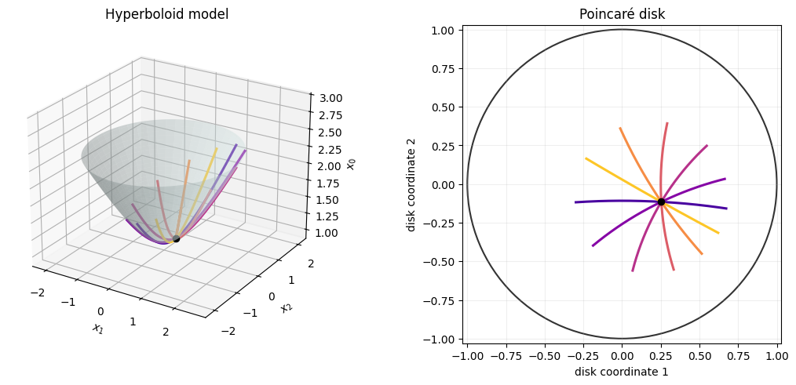

Geodesics on the Hyperboloid#
Hyperbolic space has constant negative curvature. In the hyperboloid model, two-dimensional hyperbolic space is the upper sheet
where the Lorentz inner product is
The tangent space at \(x\) contains vectors \(u\) satisfying \(\langle x,u\rangle_L=0\). For a unit tangent vector, the geodesic has the closed form
We generate several directions at one point and view the resulting geodesics both on the hyperboloid and after projection into the Poincaré disk.
import jax
jax.config.update("jax_enable_x64", True)
import jax.numpy as jnp
import matplotlib.pyplot as plt
import numpy as np
from geojax.geometry import Hyperboloid
Build unit tangent directions#
The geometry projects arbitrary ambient vectors into the tangent space. We then normalize them with the Lorentz norm.
H = Hyperboloid(size=3)
base = H.project(jnp.array([1.0, 0.55, -0.25]))
angles = jnp.linspace(0.0, jnp.pi, 6, endpoint=False)
ambient_directions = jnp.stack(
[jnp.zeros_like(angles), jnp.cos(angles), jnp.sin(angles)], axis=1
)
tangent_directions = jax.vmap(lambda v: H.tangent_project(base, v))(
ambient_directions
)
unit_directions = jax.vmap(lambda u: u / H.norm(base, u))(tangent_directions)
print("Base point belongs to H^2:", bool(H.belongs(base)))
print(
"Maximum tangency residual:",
float(jnp.max(jnp.abs(jax.vmap(lambda u: H.lorentz_inner(base, u))(unit_directions)))),
)
print("Tangent norms:", jax.vmap(lambda u: H.norm(base, u))(unit_directions))
Base point belongs to H^2: True
Maximum tangency residual: 1.1102230246251565e-16
Tangent norms: [1. 1. 1. 1. 1. 1.]
Trace the geodesics#
We use the exponential map rather than inserting the closed-form expression directly. The endpoint distance should equal the elapsed unit-speed time.
times = jnp.linspace(-1.15, 1.15, 180)
paths = jax.vmap(
lambda direction: jax.vmap(lambda time: H.exp(base, time * direction))(times)
)(unit_directions)
endpoint_distances = jax.vmap(lambda path: H.dist(path[0], path[-1]))(paths)
print("Expected endpoint distance:", float(times[-1] - times[0]))
print("Computed endpoint distances:", endpoint_distances)
Expected endpoint distance: 2.3
Computed endpoint distances: [2.3 2.3 2.3 2.3 2.3 2.3]
Compare two models of the same geometry#
The map
sends the hyperboloid to the Poincaré disk. It preserves angles but not Euclidean lengths. Hyperbolic geodesics therefore appear as circular arcs that meet the disk boundary orthogonally.
def poincare(point):
return point[..., 1:] / (point[..., :1] + 1.0)
fig = plt.figure(figsize=(11.5, 4.8), constrained_layout=True)
ax_surface = fig.add_subplot(1, 2, 1, projection="3d")
ax_disk = fig.add_subplot(1, 2, 2)
radii = np.linspace(0.0, 2.1, 70)
azimuths = np.linspace(0.0, 2.0 * np.pi, 100)
R, Phi = np.meshgrid(radii, azimuths)
X1 = R * np.cos(Phi)
X2 = R * np.sin(Phi)
X0 = np.sqrt(1.0 + R**2)
ax_surface.plot_surface(
X1, X2, X0, color="#D9ECEB", alpha=0.42, linewidth=0, antialiased=True
)
colors = plt.cm.plasma(np.linspace(0.12, 0.88, len(paths)))
for path, color in zip(np.asarray(paths), colors):
ax_surface.plot(path[:, 1], path[:, 2], path[:, 0], color=color, linewidth=2.2)
disk_path = np.asarray(poincare(path))
ax_disk.plot(disk_path[:, 0], disk_path[:, 1], color=color, linewidth=2.2)
base_np = np.asarray(base)
ax_surface.scatter(base_np[1], base_np[2], base_np[0], color="black", s=35, zorder=5)
disk_base = np.asarray(poincare(base))
ax_disk.scatter(disk_base[0], disk_base[1], color="black", s=35, zorder=5)
ax_surface.set(
title="Hyperboloid model",
xlabel="$x_1$",
ylabel="$x_2$",
zlabel="$x_0$",
)
ax_surface.view_init(elev=24, azim=-58)
ax_surface.set_box_aspect((1, 1, 0.8))
boundary = plt.Circle((0.0, 0.0), 1.0, fill=False, color="0.2", linewidth=1.5)
ax_disk.add_patch(boundary)
ax_disk.set(
title="Poincaré disk",
xlabel="disk coordinate 1",
ylabel="disk coordinate 2",
xlim=(-1.03, 1.03),
ylim=(-1.03, 1.03),
)
ax_disk.set_aspect("equal")
ax_disk.grid(alpha=0.2)
plt.show()

The curves are the same geodesics in two coordinate models. The hyperboloid view makes the ambient Lorentzian construction explicit; the disk gives a compact picture that is often easier to interpret.
What to try next#
Move the base point and check that projected geodesics remain inside the disk.
Verify
H.log(x, H.exp(x, u))for a small tangent vectoru.Optimize a loss over hyperbolic embeddings using the same
MinimizeAPI.
The paired-model visualization is inspired by the geometric examples in the Geomstats documentation.